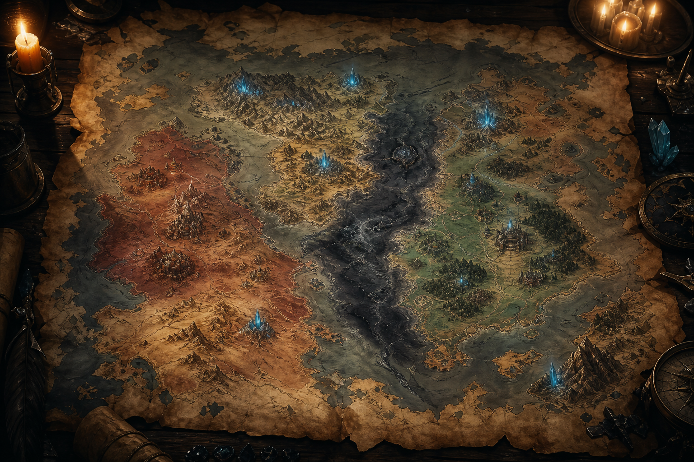

Знания / Язык
Кхарак
Древний язык орков, сохранившийся в названиях держав, городов и договоров.

Словарь корней
КАР
Путь, торговля
Используется в словах, связанных с дорогой, обменом и правом прохода.
ТУР
Клятва, нерушимость
Корень договоров, обетов и юридической неизбежности.
- Производные
- Картур
ВЕЛ
Руда
Связан с сырой силой, недрами и веществом, меняющим ход истории.
- Производные
- Велтир
ТИР
Крепость
Означает защиту, камень, удержание прохода и власть стены.
- Производные
- Велтир
ЭЛЬ
Знание
Корень школ, письма, памяти и точного ремесла.
- Производные
- Элидор
ДОР
Гора
Используется в названиях горных мест, твердынь и высоких школ.
- Производные
- Элидор
Использование
Кхарак больше не звучит как живой язык, но продолжает управлять картой мира. Названия держав, старых дорог и рудных комплексов часто являются не поэзией, а сжатыми юридическими или инженерными формулами.
Картур
Картур - важнейший сохранившийся термин. В Маркоре он означает нерушимую торговую клятву, нарушение которой делает человека врагом всех пяти картелей.